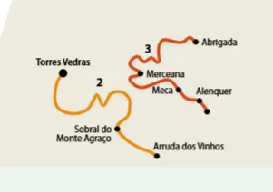
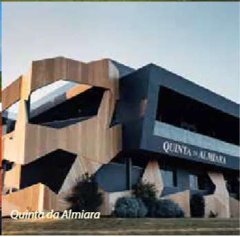
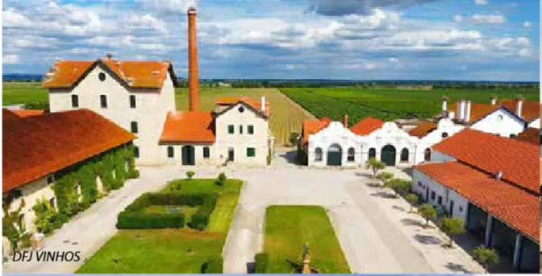
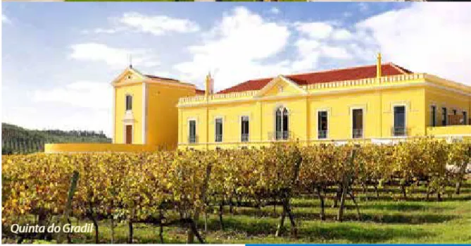

Chapter 4 · The Portuguese wine regions
Lisboa Wine Region
Key figures (2022)
Viticultural area: 19,869 ha
Total Production: 119,436,200 litres
Average yield: 6,000 litres/ha
Certified wine types: 90% (IG and DO)
History
Vines have been cultivated in the Lisboa area since Antiquity. There are traces of the the presence of Phoenicians, Greeks, Romans and Visigoths. During the Middles Ages, from the 12th century onwards there was a considerable increase in the number of religious orders, chief among them, the Cistercian Order in Alcobaça, where the followers of Saint Bernard dedicated themselves to viticulture. In addition to their ministerial duties, the Order gave work and professional training to Christian citizens. The wines formerly called “Estremadura” wines became widely consumed, gained much prestige, developed into one of the most important products in the economic activity of the region, and became identified with one of the best wine regions of the country, both in terms of variety and wine production.

Caldas da Rainha
Óbidos
1
Bombarral

Terroir
Climate: Köppen-Geiger classification:
Csb, - humid temperate climate with a dry season in summer. In terms of climate, it can be considered to be in the transition between the zone of humid, permanent westerly winds and that of dry summers. The climate is temperate and does not have large temperature fluctuations. MCC System indices (Tonietto & Carbonneau, 2004): The proximity of the Atlantic and the undulating relief make this region a distinct topoclimate. The climate of this region is coastal, with heliothermal index (HI): -1, cool night index (FI): +1, dryness index (DI): +1. There are minor climatic risks with frost at the beginning of spring, climatic events during flowering and rare occurrences of hailstorms in May.
Rainfall: 600–700 mm
Geology and soil science:
Topography: The relief is not very high, except to the south, where some basalt and granite strata appear and the region is almost entirely based on secondary clay-limestone and sandy-clay formations. In the central part of the region, we find the largest vineyards in the region, set on the gentle slopes of the hills. In the northernmost area, there is a vast region of vineyards stretching from the slopes of the Candeeiros and Aires mountains to the sea.
Lithology: Most of the vineyards in this region are planted on brown and red Mediterranean soils or limestone soils.
Vineyard elevation is most often between 10 and 300 metres above sea level.
Types of wine produced
Lisboa IG wine or Lisboa Regional
Wine (with the Estremadura and Alta
Estremadura subregions): Red, white, rosé, sparkling, liqueur, light wine. Alenquer DO, Arruda DO, Colares DO
and Torres Vedras DO wines (VQPRD):
Red and white,
Bucelas DO wines: White and sparkling,
Carcavelos DO wines (VLQPRD): Red liqueur and white liqueur,
Óbidos DO wines: Red, white, rosé and sparkling,
Encostas D’Aire DO wines (VQPRD): Red, white, rosé and ”Medieval de Ourém”
Lourinhã DO wines: Aguardente Vínica (brandy from wine spirit)
Regional contacts
Technical information: Comissão Vitivinícola da Região de Lisboa (Vitivinicultural Commission of the Lisboa Region), Rua Cândido dos Reis, Apartado 145, 2564-910 TORRES VEDRAS. Tel.: 261 316 724, e-mail: cvrlisboa@cvrlisboa.com,
Website: http://www.vinhosdelisboa. com/ Cultural information on the wine of
the region: Confraria das Enófilos da Estremadura, Citarão (Confraternity of Oenophilists in the Estremadura and Citarão”) – EN 8, Apartado 69, 2544-909 BOMBARRAL. Museu Nacional do Vinho (National Wine Museum), Rua de Leiria Olival Fechado, 2460-059 ALCOBAÇA, Tel.: 213 506 700. Institutions of higher learning
and viticultural research: Instituto Superior de Agronomia, ISA (Higher Institute of Agronomy), Tapada da Ajuda, 1349 – 017 LISBON;
Website: www.isa.utl.pt
Certification authority: Comissão Vitivinícola da Região de Lisboa (Vitivinicultural Commission of the Lisboa Region), Rua Cândido dos Reis – Apartado 145, 2560-312 TORRES VEDRAS, Tel.: 261 316 724 – Website: www.vinhosdaestremadura.pt, e-mail: cvrlisboa@cvrlisboa.com
Enotourism information: Rota da Vinha e do Vinho – Região de Tourismo do Oeste (“Wine and Vine Route – Oeste Tourism Region”), Rua Direita, 2510 ÓBIDOS, Tel 262 955 060,
Site: www.rotavinhooeste.com
Botany (biodiversity features) and authorised varieties
Red wines: Alfrocheiro, Alicante Bouschet, Amostrinha, Aragonez (Tinta Roriz), Baga, Bastardo, Bonvedro, Cabernet Franc, Cabernet Sauvignon, Caladoc, Camarate, Carignan, Castelão, Cinsaut, Grand Noir, Grenache, Grossa, Jaen, Merlot, Moreto, Negra Mole, Parreira Matias, Petit Verdot, Pinot Noir, Preto Martinho, Ramisco, Rufete, Syrah, Tinta Barroca, Tinta Caiada, Tinta Carvalha, Tinta Miúda, Tintinha, Tinto Cão, Touriga Franca, Touriga Nacional, Trincadeira (Tinta Amarela), Cabinda, Molar, Monvedro, Preto Cardana, Sousão, Tannat, Tinta Lisboa, Tinta Pomar, Valbom, Zinfandel, Fernão Pires Rosado®, Gewurztraminer®, and Pinot Gris®.
White wines: Alicante Branco, Almafra, Alvarinho, Antão Vaz, Arinto (Pedernã), Bical, Boal Branco, Boal Espinho, Cerceal Branco, Chardonnay, Diagalves, Fernão Pires (Maria Gomes), Galego Dourado, Jampal, Malvasia, Malvasia Rei, Moscatel Graúdo, Rabo de Ovelha, Riesling, Sauvignon, Seara Nova, Sercial (Esgana Cão), Síria (Roupeiro), Tália, Tamarez, Trincadeira Branca, Trincadeira das Pratas, Viognier, Viosinho, Vital, Alvadurão, Cercial, Chenin, Encruzado, Loureiro, Malvasia Fina, Marquinhas, Pinot Blanc, Ratinho, Semillon and Verdelho.
Prestigious wineries
in the region: Casa Santos Lima
Casa Santos Lima is a family business dedicated to the production, bottling and marketing of Portuguese wines. It operates in the Lisboa, Algarve, Alentejo, Douro and Vinho Verde regions. It produces 35 million bottles. It exports around 90 per cent of its total production to more than 50 countries on 5 continents. Its own vineyard area is 600 hectares. In recent years it has been one of the most awarded Portuguese producers in the main national and international wine competitions. A DFJ VINHOS is a family business which began in 1998. José Neiva Correia is the owner and head winemaker. The company exports 99% of the 10 million bottles it produced to more than 50 countries. Their own vineyards cover 250 ha. Contracts with small-scale producers bring this hectarage up to more than 600 ha. Their estates practice integrated viticulture, a method that incorporates principles of sustainable agriculture. Quinta do Gradil The Quinta do Gradil belonged to the Marquises of Pombal. The estate has 120 hectares of vineyards on its 200-hectare property. AdegaMãe AdegaMãe is part of the Riberalves group. The winery pictured here overlooks its 40-hectare vineyard in Torres Vedras which garners annual sales of EUR 4.4 million. Quinta da Almiara The estate has 160 hectares of vineyards, and is located in an area of great scenic beauty in the parish of S. Mamede da Ventosa in Torres Vedras. Its wines are made exclusively from grapes harvested on the estate.





Storage capacity: 4 million litres. Quinta da Chocapalha Adega Cooperativa de Dois Portos, CRL. Adega Cooperativa de Vermelha, CRL. Quinta de Pancas - Vinhos, S.A.